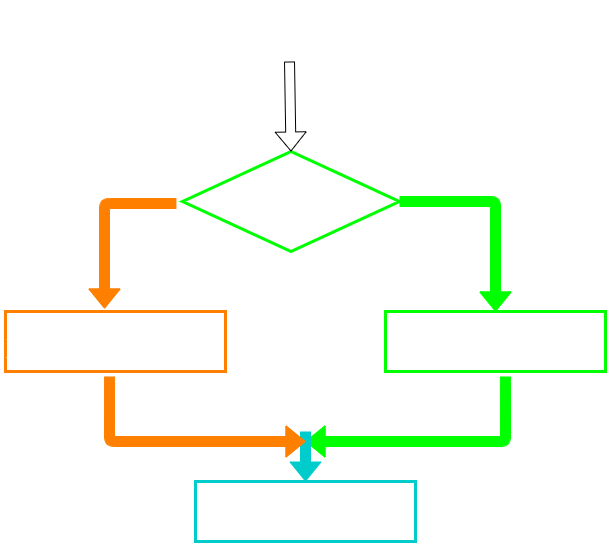

Learn Python
Two-Way Decisions
- Sometimes we want to do thing if a logical expressions is true and something else if the expression is false
- It is like a fork in the road - we must choose one or the other path but not both
- The Syntax we use for this is if then else
